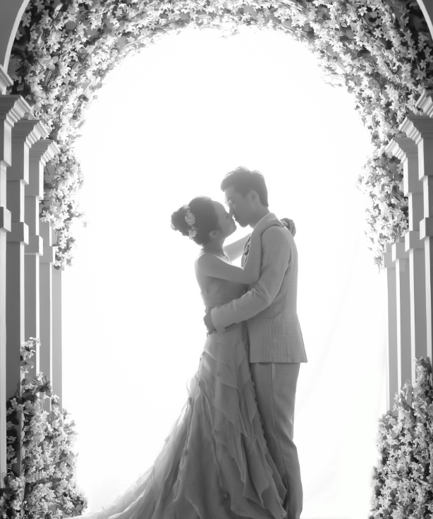

Hello,everybody!
这是王老师给我布置的第一个作业，我想引用一片文章来完成这份作业。这篇文章其实出自于我的空间《北京遇上西雅图》经典语录
一个人就算再好，但不愿陪你走下去，那他就是过客。 人再有缺点，但能处处忍让你，陪你到最后，就是终点。 都想找个十全十美的爱人，可人总有缺点。 爱情就是相互忍，彼此真，过一生。 找个让你一辈子开心的人，才是爱情的目标。 所以，选爱人不需要太多标准， 只要这三样：不骗你，不伤害你，和陪着你。
面对爱情，我曾经也彷徨过。在遇上对的人之前，也受过不少的挫折和非人的折磨， 我也不少次地感慨上天对我的不公。可是遇上老王之后，我却发现，自己所受过的那些伤害都不算什么，或者说我要感谢自己所遭受的一切 因为，那些不幸哪怕少一个，我也遇不上对我来说如此合适的他。
所以，除了要相信自己可以遇到那个可以一直陪伴你走下去的人之外，还要相信，他正在来的路上，你会发现 He deserves your waiting!
